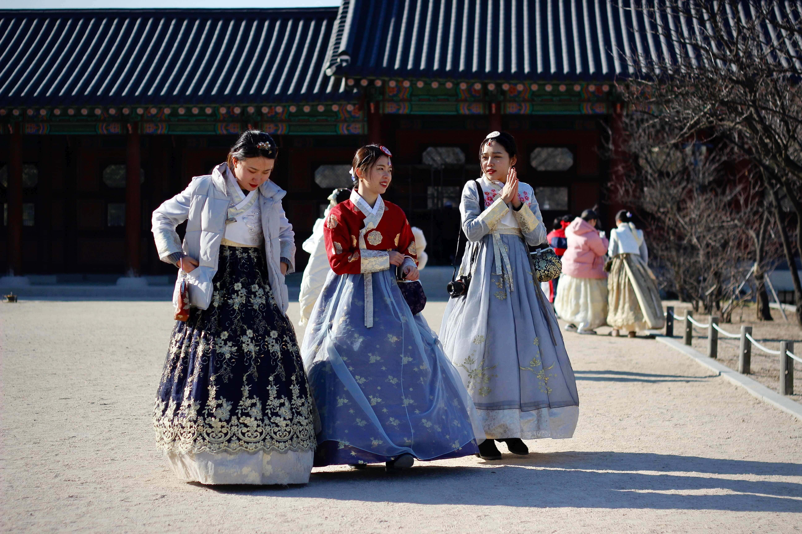
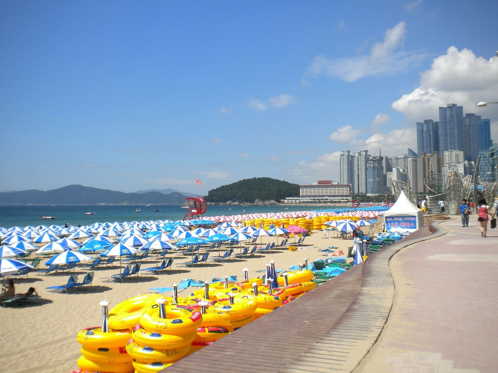

Tipos de atractivos
Culturales
Hanbok
Es una vestimenta tradicional coreana compuesta por dos piezas principales, la prenda superior se la conoce como jeongori, mientras que la inferior tiene dos nombres diferentes, para las mujeres se llama chima y para los hombres es baji. En la actualidad, es común encontrar tiendas para comprar hanboks con diferentes diseños y además muchos palacios cuentan con alquileres de los mismos para tomarse fotos durante la estadia.
Gastronomía

Los gastronomía coreana es conocida por la variedad de vegetales y colores que abastecen los platos, algunos de los más recomendados son el Teokkbokki, platillo hecho a base de pastel de arroz, Bulgogi, se presenta en una carne marinada con un sabor dulce, Kimchi, Bibimbap y más.
Arte tradicional

Desde la danza, pintura, música, teatro, entre otros, el arte tradicional representa para los coreanos toda su historia. Hoy en día, en festivales como el Chuseok se puede apreciar las performances tradicionales que se realizan como música y danza tradicional al sonido de instrumentos viento, cuerda y percusión.
Naturales
Parques

Durante el mes de abril se recomienda realizar visitas a los grandes parques y asi apreciar el crecimiento de lo flor de cerezo, la isla Nami, ubicada en Chuncheon es una de las elegidas para presenciar este fénomeno.
Playas
Posee playas de aguas tranquilas que dan la oportunidad de refrescarse en el verano y realizar actividades acuaticas como en los alrededores. Algunas de las playas más conocidas son Hyeopjae, Jungmun, Songjeong, Haeundae, entre otras.